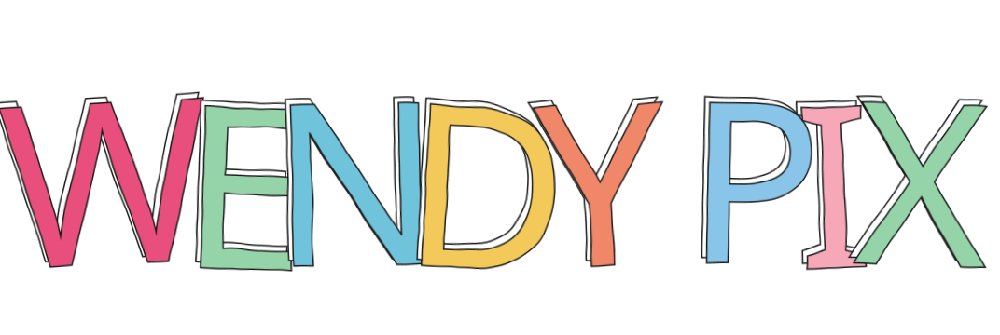

Photographer,
Portraits & Moments
Available for
Headshots · Corporate Portraits · Product Branding · Events
About
Los Angeles–based photographer Wendy Shapero is known for her fun, easy‑going, relaxed manner. Her focus has been lifestyle, private celebrity & corporate events, headshots for actors (VO and On-Camera), portraits for executives, product placement, and special occasions.
Stylistically she works moment to moment and celebrates spontaneity and levity. Schedule a free 15-minute discovery call to plan your next shoot.